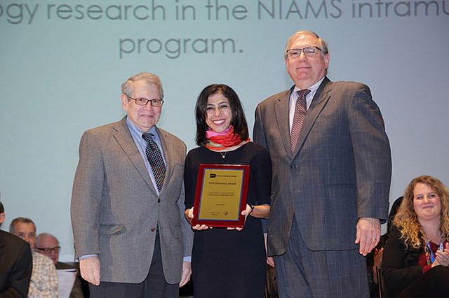

|
News:
A nice end-of-2017 result: Our lab's first research paper got accepted for publication on December 28th, 2017. Congrats to JJ, George, and Stanley!
Maria Fasolino and George Georgakilas, postdoctoral fellows, present lab's work at the Epigenetics Institute's Retreat in Citizen's Bank Park, Philadelphia, on October 13th, 2017.
John Johnson and Naomi Goldman, IGG PhD students, present lab's work at the Immunology Graduate Group Retreat in Reisterston, MD on October 6th, 2017.
September 1st 2017 was an exciting day for the Vahedi lab. Our HiChIP for K27ac in mouse T cells worked beautifully! Thanks Maria, Jelena, Naomi, and Yeqiao!

|